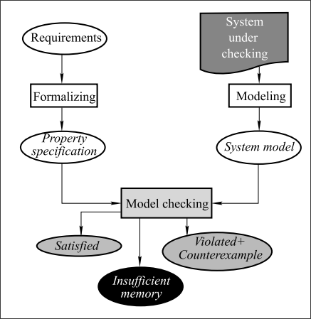

什么是模型检测(Model Checking)
Jun 12, 2023
模型检测的概念
[Clarke & Emerson 1981]:
“Model checking is anautomatedtechnique that, given
afinite-statemodel of a system and alogical property,
systematically checks whether this property holds for
(a given initial state in) that model.”
模型检测是一种自动化技术，给定系统的有限状态模型和逻辑属性，系统地检查该属性是否适用于该模型（给定的初始状态）。
简单来说，对于一个模型M，和一个状态$ \phi $，其中M是一个有限状态的模型，$ \phi $是一个状态量，模型检测的作用就是在有限的时间或者空间内，通过遍历这个模型的状态空间或是具有限定性质的状态图以确定系统是否满足给定的性质。
- 若系统拥有这个状态，则系统通过验证。
- 系统不满足这个状态，则验证失败，并提出一个
反例（counterexample)。 - 若时间或空间超限，则认为这个这个系统是
状态爆炸(state-explosive)的。

软件工程中的模型检测
软件工程中的模型检测主要作用是检测软件系统是否满足某些特定的属性或特点，对于一个典型的模型检测过程主要有如下四步：
- 为被验证的系统构建模型
通常是通过高级语言的源程序自动生成一个抽象模型（Tool: modex from spinroot），我们也可以自己手动生成模型。 - 定义系统应满足的条件
模型检查器(model checker)检查一个模型是否具有某些特定的属性，比如函数功能正确性，安全性，生命周期等等。通常属性需要用一些形式化语言（比如LTL（线性时间逻辑)，CTL（计算树逻辑))来显式定义有些属性也可以通过系统的行为推断出来，例如，公平性属性可以是隐式的，与系统中资源的分配方式有关。 - 执行模型检测
通常一个模型检测算法会遍历模型的状态空间直到状态空间遍历完毕或者提出了一个反例，这个算法很好理解，当一个模型M的状态空间被遍历完了之后，已经没有必要继续遍历了，算法自然结束；如果提出了一个反例，则说明系统不满这个状态，也就没有继续下去的必要了。
当前主要有两种模型检测算法：DFS（深度优先搜索)和BFS（广度优先搜索)。 - 生成结果
对应的，一个模型检测器会生成以下三种结果：Satisfied，模型M满足状态$\phi$。UnSatified，已检测到的某些状态和$\phi$冲突，反例被抛出，则认为模型不满足性质。‘Unfinished，检测过程由于状态空间爆炸问题终止。